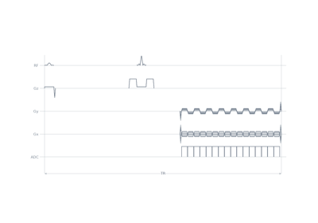

Gallery source pages#
The pages sphinx-gallery generates from the example scripts. The documentation presents them through Examples and the landing pages under it.
Course#
The pages sphinx-gallery generates from the example scripts. The documentation presents them through Examples and the landing pages under it.

Tours#
The pages sphinx-gallery generates from the example scripts. The documentation presents them through Examples and the landing pages under it.
Gradient echoes#
The pages sphinx-gallery generates from the example scripts. The documentation presents them through Examples and the landing pages under it.
Spin echoes#
The pages sphinx-gallery generates from the example scripts. The documentation presents them through Examples and the landing pages under it.

2D PROPELLER spin echo with echo-planar blades
Fast spin echo#
The pages sphinx-gallery generates from the example scripts. The documentation presents them through Examples and the landing pages under it.
MPRAGE#
The pages sphinx-gallery generates from the example scripts. The documentation presents them through Examples and the landing pages under it.
Balanced SSFP#
The pages sphinx-gallery generates from the example scripts. The documentation presents them through Examples and the landing pages under it.
Echo-planar imaging#
The pages sphinx-gallery generates from the example scripts. The documentation presents them through Examples and the landing pages under it.
Zero echo time#
The pages sphinx-gallery generates from the example scripts. The documentation presents them through Examples and the landing pages under it.